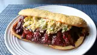

<!DOCTYPE html>
<html lang="en">
    <head>
        <meta charset="UTF-8">
        <title>Babybackribs Recipe</title>
        <link rel="stylesheet" href="recipes.css"/>
    </head>
</html>
<h1 class="headers">Recipe for Babybackribs </h1>

<h2 class="headers">Tasty Babybackribs </h2>
<p>Basic Babybackribs recipe for beginners</p>
<h2 class="headers">Ingredients</h2>
<ul class="list">
    <li>2 Racks of baby back pork ribs</li>
    <li>1/3 cup of kosher salt</li>
    <li>1/4 cup of brown sugar</li>
    <li>2 taplespoons of chili powder</li>
    <li>1 cup of bbq sauce</li>
    <li>4 sesame hamburger rolls</li>
    <li>1 cup of coseslaw</li>
</ul>
<h2 class="headers">Steps</h2>
<ol class="orderlist">
    <li>Preheat over to 325 degrees F</li>
    <li>Mix seasonings</li>
    <li>Season and rub the rubs</li>
    <li>Bake in the over for 2 hours and 45 minutes</li>
    <li>Cut each rack in half and brush wit bbq sauce</li>
    <li>Grill ribs for 3-4 minutes each side and enjoy</li>
</ol>